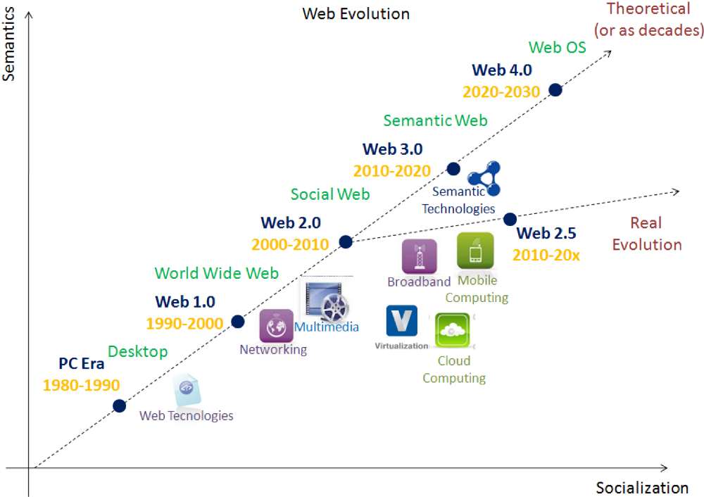
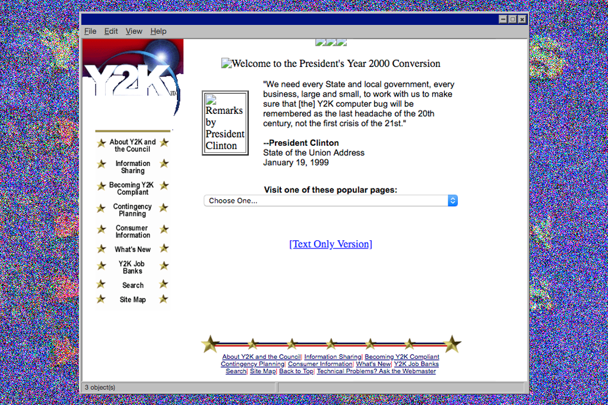

The evolution of the web can currently be split into 3 distinct versions: Web 1.0, Web 2.0, and Web 3.0. Each version has fundamentally changed how we interact with the internet, eventually becoming obsolete (a ruin).
For each evolution to take place, new technologies emerged, spurred on by the growing population of web users.
This blog is best read chronologically. Click here to start at the beginning.
The Web 3.0, a.k.a. the Semantic Web or read-write-execute, refers to the future of web. In this era, computers can interpret information like humans via Artificial Intelligence and Machine Learning. This will help to intelligently generate and distribute useful content tailored to the particular needs of a user. Some early examples of the web 3.0 include Apple’s Siri, Google’s Cloud API, and Wolfram Alpha.
Not to be confused with the internet (though often used interchangeably), which had been evolving since the 1960s, the World Wide Web is an online application built upon innovations like the HTML language, URL “addresses,” and hypertext transfer protocol, or HTTP. The Web has also become a decentralized community, founded on principles of universality, consensus, and bottom-up design.
“There are very few innovations that have truly changed everything,” said Jeff Jaffe, CEO of the World Wide Web Consortium. “The Web is the most impactful innovation of our time.”
Only 3 decades of the World Wide Web, and society has been fundamentally changed in almost every aspect.
In 1987, it’s highly unlikely that anyone imagined what a broad range and role the GIF would play in modern internet culture. But as the internet has evolved, the GIF has shown a surprising ability to evolve with it. It’s this durability, flexibility, and, well, tackiness that has allowed the GIF to become the internet’s primary purveyor of memes and looping pictures.
Web 2.5 is the concept that addresses the evolution which we are currently seeing in our era 2010–2020 between Web 2.0 and 3.0. On our way to Web 3.0, players like Amazon, Google, Salesforce, etc., provide services in Cloud computing for developers to create web applications that allow users to connect them on any device: anytime, and anywhere.
Web 2.5 is focused on mobile computing and evolution in mobile technologies. Mobile computing plays an obviously major role in engaging larger audiences via native apps and mobile web apps. We can find more and more apps getting into mobile market to establish their presence by addressing mobile users. Conceptually, we can call Web 2.5 the convergence between Social and Semantic web.
Yahoo just announced that it will be closing its United States branch of GeoCities!!! Will GeoCities join a long list of other services discontinued by Yahoo, such as Farechase, LAUNCHcast, My Web, Audio Search, Pets, Live, Kickstart, Briefcase, Webmessenger, and Teachers? Is this the end of the World Wide Web? OMG. WHAT DO WE DO NOW??
After much convicing from my friends and family, I decided to bite the bullet and make a facebook account. Friend me! My name is SirMammingtonham XI.
I'm not sure what all the fuss about social media is. I think personal sites like this are much better anyway.
The Web 2.0, also referred as Social Web or read/write web, is the era (2000–2010–present) defined by interactions between web users and sites, allowing users to communicate with other users. In this era, every user can be a content producer, and content is distributed and shared between sites. Some famous Web 2.0 applications include Facebook, Youtube, Flickr, Twitter etc. Web technologies like HTML5, CSS3 and Javascript frameworks like ReactJs, AngularJs, etc., enable startups to innovate new ideas, enabling users to contribute more in this Social Web.
Web 2.0 is built around users.

The first version of web—Web 1.0—also referred as Syntactic Web or read-only web, is the era (1990–2000) where the role of a user is limited to reading information provided by the content producers. There is no option given for users or consumers to communicate back the information to the content producers. Examples of Web 1.0 are static websites and personal sites, i.e. GeoCities and this website.
The WWW project merges the techniques of information retrieval and hypertext to make an easy but powerful global information system. The project is based on the philosophy that much academic information should be freely available to anyone. It aims to allow information sharing within internationally dispersed teams, and the dissemination of information by support groups. Originally aimed at the High Energy Physics community, it has spread to other areas and attracted much interest in user support, resource discovery and collaborative work areas.
Click here to visit the very first website!